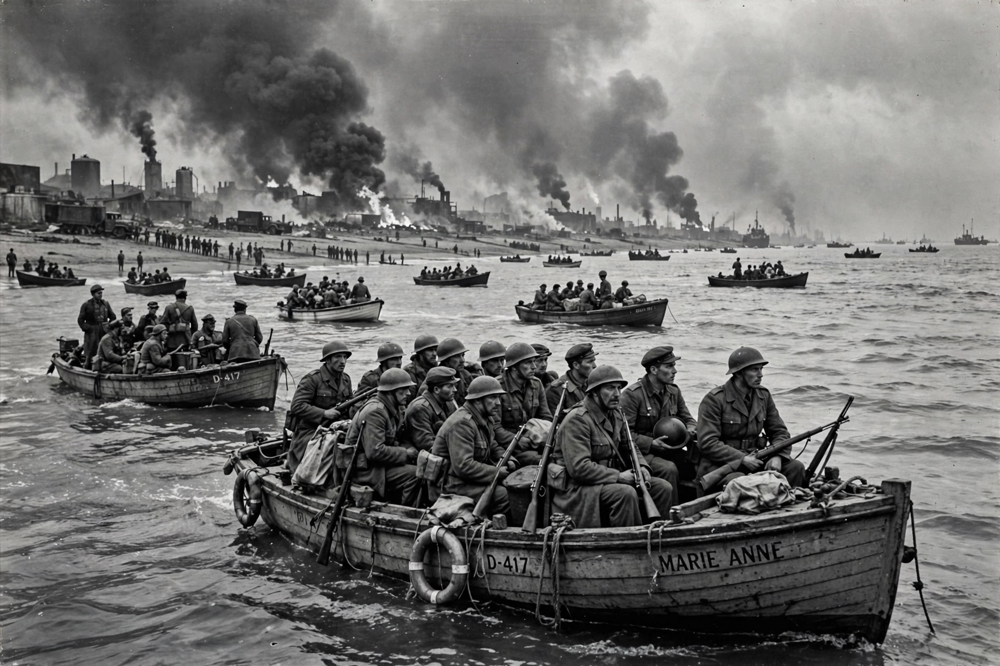

The little ships of Dunkirk were the private craft — fishing boats, pleasure steamers, yachts, lifeboats, barges, and launches — that took part in the evacuation of Allied troops from the beaches and harbour of Dunkirk, France, during Operation Dynamo (26 May – 4 June 1940) in the Second World War. Between the fall of France and the arrival of the German army, the little ships helped lift more than 338,000 British and French soldiers across the Channel to safety, and their name became emblematic of British civilian resolve.
| Little ships of Dunkirk | |
|---|---|
 Small civilian boats loaded with soldiers leaving the Dunkirk beaches, May 1940 Little ships at Dunkirk, 1940 | |
| Operation | Dynamo, 26 May – 4 June 1940 |
| Boats involved | About 850 private craft |
| Total evacuated | Over 338,000 Allied troops |
| Crossing | Dunkirk – Dover and Ramsgate |
Following the German breakthrough in the Ardennes in May 1940, the British Expeditionary Force and large French formations were cut off in the pocket around Dunkirk. Vice-Admiral Bertram Ramsay, directing the evacuation from Dover Castle, issued a call on 27 May for owners of self-propelled craft of shallow draught — boats between about 30 and 100 feet — to report to collection points along the south coast. Owners, civilian volunteers, Royal Navy crews, and fishermen answered in large numbers; boats assembled at Ramsgate, Dover, and Sheerness before crossing to France.
The destroyers and troopships could not reach the beaches, where men waited in lines stretching into the surf. The little ships ferried soldiers from the shore and from the improvised eastern mole at Dunkirk harbour out to the larger vessels, and many made the full crossing back to England themselves. Shallow-draught craft — Thames sailing barges, Dutch schuits, French fishing boats, pleasure cruisers from the Thames estuary, and Royal National Lifeboat Institution lifeboats — worked under artillery fire, mines, and repeated attacks by the Luftwaffe. Notable vessels included the paddle steamer Medway Queen, which made seven crossings and became known as the "Heroine of Dunkirk"; the Sundowner, a former steam yacht commanded by its 66-year-old owner Charles Lightoller (the most senior surviving officer of the Titanic); and the fishing boat Royal Daffodil, which evacuated a record 9,500 men.
By the morning of 4 June the evacuation was complete: some 338,226 soldiers had been brought out, of whom the little ships had carried about 100,000 directly. Around 240 craft were lost. Each year the surviving little ships sail in the annual commemorative return to Dunkirk, organised by the Association of Dunkirk Little Ships, founded in 1965. The phrase "Dunkirk spirit" entered the language as shorthand for communal perseverance in crisis.
Categories: Dunkirk evacuation · Second World War naval operations · Maritime history of England